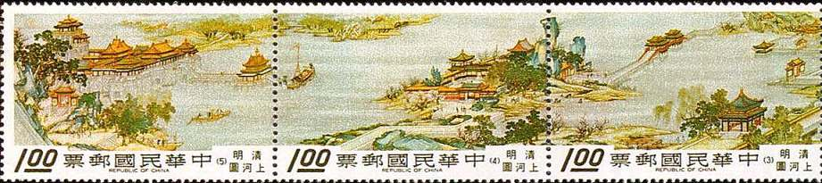
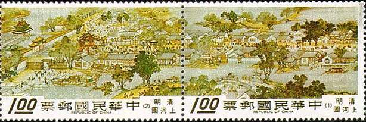
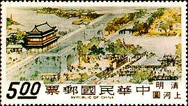
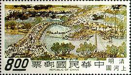
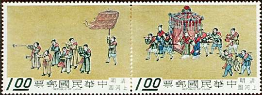
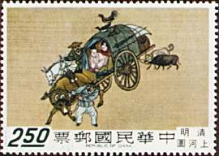
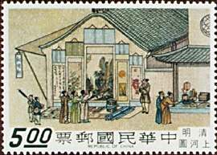
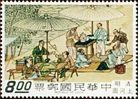

A City in Cathay - A Famous
Hand Scroll Painting
(Issue of 1968)
Issue date: June 18, 1968. Perforation: 12 1/2. Process: Photogravure: Photographer: Liu Pao-chin. Paper: Photogravure stamp paper. Printer. Printing Bureau of the Ministry of Finance, Japan. Scott: 1556 - 1562.
Continuing the issue of the collection of the Palace Museum, another set of stamps with The Famous Hand Scroll Painting of A City in Cathay was issued in 1968. Composition of the stamp set is unusual. Five $1.00 stamps were printed in a strip showing the last eleven feet of the hand scroll. Two other stamps with the higher values of $5.00 and $8.00, in a larger format show, two other beautiful sections of the scroll.
The original copy of this hand scroll was painted by Chang Tse-tuan, an artist of the Northern Sung dynasty (AD 960-1126). His work is based on the actual social life of the city of Kaifeng, the capital of that dynasty. The picture includes more than 4,000 human figures of every profession and attire, animals, birds, trees, flowers, vessels, boats, buildings, stores, houses of entertainment, streets, lanes, bridges, city walls, city gates and many others. The copy introduced by this set of stamps was painted during the Ching dynasty in 1736, by the joint efforts of five court painters, named Chen Mei, Sun Hu, Chin Kun, Tai Hung and Cheng Chih-tao.

$1.00. Queen's ship landing. $1.00. Palace. $1.00. Bridge and wall

$1.00. City and wall of Forbidden City.$1.00. View of the city in Cathay.
 |
 |
$5.00. City wall and gate. $8.00. Suburb around Great Bridge.
A City in Cathay - Hand Scroll
Close-up Views
(Issue of 1969)
Issue date: May 20, 1969. Perforation: 3 1/2. Dimension (mm): 51 x 36. Process: Photogravure. Photographer: Liu Pao-chin. Paper: Photogravure stamp paper. Printer: Printing Bureau of the Ministry of Finance, Japan. Scott: 1610 - 1614.
Continuing the theme "City of Cathay - A Famous Hand Scroll Painting in Palace Museum Stamps", issued on June 18, 1968, another set of "A City of Cathay Hand Scroll Close-up Views Postage Stamps" was released, showing special features of ancient Chinese social life, as selected from this hand scroll. A pair of 1.00 stamps was printed, produced in a strip showing a bridal parade from the hand scroll. The three other stamps of 2.50, 5.00 and 8.00 feature an emigrant ox cart, an art gallery, and a roadside eating place from the painting respectively.

$1.00. Musicians and standard bearer from a bridal procession. $1.00. Bridal procession.
 |
 |
 |
$2.50. Emigrant farm family in oxcart. $5.00. Art gallery. $8.00. Roadside food stand.